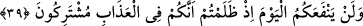

39. Zulmettiğiniz için bugün (nedâmet) size hiçbir fayda vermeyecektir. Çünkü
siz, azapta ortaksınız.
Allah Teâlâ tarafından bir azarlama ve sitem olarak onlara: Küfür ve mâsiyetlerle
onlara uymakla dünyada kendinize “zulmettiğiniz için bugün nedâmet,” onlardan uzak
olmayı temenni etmeniz “size hiçbir fayda vermeyecektir. Çünkü siz” dünyada azâbın
sebebi olan küfür ve masiyetlerde ortak olduğunuz gibi “azapta ortaksınız” buyurur.
Âyete şöyle bir mânâ vermek de mümkündür: Şeytan dostlarınızın sizin gibi azâba
dûçar olmaları sizin için bir şifâ, derdinize bir derman sebebi değildir. Çünkü siz, tam
aksine şifâ bulmak ve acınızı hafifletmek için: “Rabbimiz! Onlara iki kat azap ver ve
onlara büyük bir lanet eyle” (el-Ahzâb, 33/68) sözünüzle ve benzeri sözlerle onlara
bedduâ ediyorsunuz.
Âyet-i kerîmede hevâ, heves ve bid’at ehlinden olanların tâbi/uyan ve metbû/uyulan
konumuna işâret edilmektedir. Çünkü bunlardan kendisine uyulan kişi, doğru yoldan
saptırma konusunda kendisine uyanın şeytanı olmuştur. Nihâyet vakit geçmiş, azap ve
gazap gelmiş, işte o zaman bir takım bâtıl temennîlere düşmüşlerdir. Nitekim, “Bugün
yarından üstündür. Çünkü işi ertelemekte birçok âfet ve musîbet vardır” denilmiştir.
Buna göre akıllı kişi hâlini düzeltip gereğini düşünendir. Şeytan tarafından yüz üstü
azâba bırakılıp kaçmadan kişi, şeytanın siyahından da beyazından da kaçmalıdır.
Hikâye olunur ki; bir âbid manastırda uzlet ve inzivâda uzun yıllar Allah’a ibâdet etti.
O günlerde ülkenin kralının bir kız çocuğu dünyaya geldi. Kral hiçbir şekilde erkeklerin
bu kıza dokunmayacağına dâir yemin etti ve kızını manastıra kapattı. Kızını bu âbid
kişiyle manastırda iskân ve ikamete mecbur etti. Bu sûretle kızın yerini kimse
bilmeyecek ve ona tâlib olmayacaktı. Nihâyet kız büyüdü ergenlik çağına geldi. Şeytan
yaşlı bir adam sûretinde gelerek bir takım hîle ve desîseler yaptı. Sonunda bu âbid ve
zâhid kişi kızla zinâ etti ve kız gebe kaldı. Artık cenin büyüyüp gebelik belirgin hâle
gelince şeytan yine gelerek “sen bizim aramızda âbid ve zâhid bilinen bir kişisin. Şâyet
bu kız, çocuğu doğurursa, senin zina ettiğin ortaya çıkar, rezîl-rüsvây olursun. En iyisi
sen çocuk doğmadan kızı öldür. Babasına da kızın öldüğünü söyle. O da bu habere
inanır, sen de bu şekilde cezadan ve bu çirkin durumdan kurtulursun” dedi. Zâhid kişi
kızı öldürdü.
Bu sefer şeytan âlim kılığında krala, kızın babasına geldi. Bu âbid kişinin yaptıklarını;
zinâ, gebelik ve cinâyet vakalarını bir bir anlattıktan sonra şöyle ilâve etti: “Şâyet bütün
bunların gerçek olup olmadığını bilmek istersen kabri kazdır, naaşı çıkart. Kızın karnını
yar, şâyet kızın karnından çocuk çıkarsa bu benim sözümün doğru olması demektir.